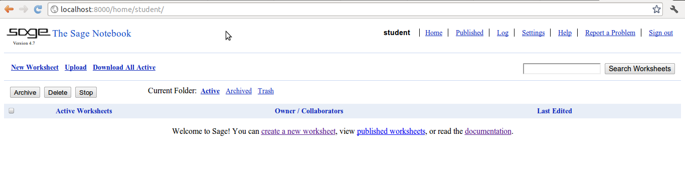
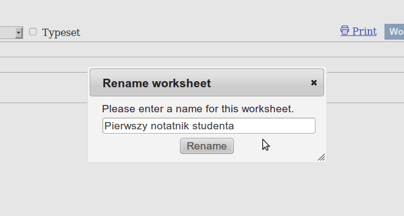
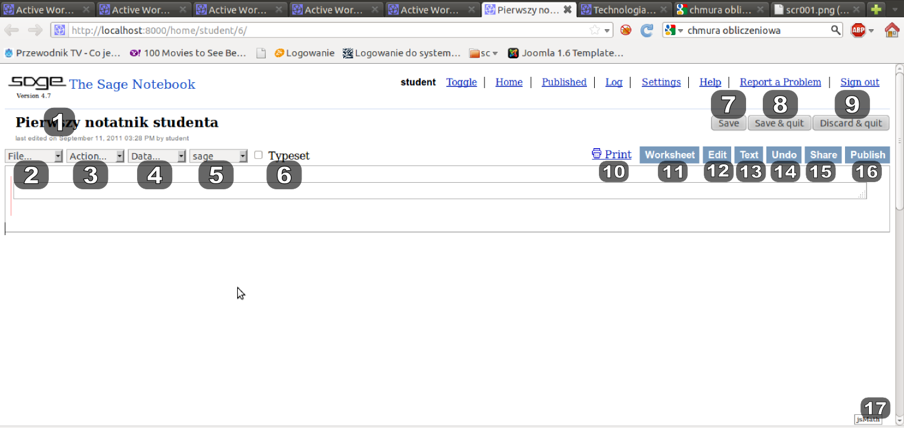

Środowisko Sage¶
Pakiet SAGE, notatnik Sage¶
Po zalogowaniu do serwisu sage.phys.us.edu.pl dostaniemy taki obraz
{kind=link}
Rysunek 1: Okno Sage po pierwszym zalogowaniu.
Kiedy już chwilę popracujemy w Sage, tworząc lub współtworząc notatniki, pojawią się one w katalogu domowym. Co widzimy na stronie domowej (patrz rysunek 2)?
SAGE The Sage Notebook Logo SAGE i jednocześnie link do nb.sagemath.org , strony projektu The Sage Notebook.
login Twój login (nazwa Twojego konta na serwerze Sage).
Home Odnośnik do katalogu domowego (Twojej strony domowej na danym serwerze Sage).
Published Odnośnik do dokumentów opublikowanych na tym serwerze Sage (mogą być one Twoje własne lub innych użytkowników). O tym czym różnią się notatniki od takich dokumentów będzie za chwilę.
Log Odnośnik do strony zawierającej historię zmian jakie wykonałeś na swoim koncie.
Settings Odnośnik do strony zawierającej ustawienia Twojego konta.
Help Pomoc (w tym samouczek Sage po polsku ).
Report a Problem Odnośnik do formularza docs.google służący do zgłaszania błędów i problemów z Sage.
Sign out Odnośnik, dzięki któremu wylogujesz się z tego serwisu.
New Worksheet Odnośnik, którym stworzymy nowy notatnik Sage.
Upload Odnośnik służący do przesyłania notatników na serwer.
Download All Active Po naciśnięciu tego odnośnika, możemy na lokalny dysk zapisać wszystkie aktywne notatniki (notatniki widoczne w katalogu Active).
Search Worksheets Okno przeszukiwania notatników.
Archive Przycisk służący do archiwizowania niepotrzebnych już notatników. Dostęp do zarchiwizowanych notatników dostajemy po przejściu do katalogu Archived.
Delete Przycisk służący do archiwizowania niepotrzebnych już notatników.
Stop Przycisk służący do zatrzymywania działających (wykonujących obliczenia, niezamkniętych) notatników. Zatrzymywanie notatników zwalnia zasoby maszyny na której postawiono serwer Sage.
Download Przycisk służący do zapisania na dysku lokalnym wybranego notatnika.
Current Folder Lista trzech odnośników do poszczególnych katalogów w ramach naszego konta:
Active Katalog zawierający aktywne notatniki. Te notatniki mogą być aktywnie rozszerzane i zmieniane przez użytkownika i wszystkich współużytkowników notatników.
Archived Katalog zawierający notatniki zarchiwizowane. W trybie podstawowym dostępne są one tylko jako strony statyczne, a nie jako notatniki Sage. Możemy je uaktywnić poprzez zaznaczenie żądanego notatnika i wciśnięcie przycisku Unarchive.
Trash Katalog zawierający usunięte przez użytkownika notatniki. Te notatniki mogą być:
- aktywnie rozszerzane - wystarczy kliknąć na nazwę żądanego notatnika i zacząć go normalnie używać (notatnik po zapisaniu znajdzie się automatycznie w katalogo Active); można też najpierw zaznaczyć żądany notatniki i kliknąć później Undelete a żądany notatnik wróci do katalogu Active.
- zarchiwizowane - służy do tego przycisk Archive
- tradycyjnie zatrzymywane (Stop) lub ściągane na dysk (Download)
Active/Archived/Deleted Worksheets Lista aktywnych, zarchiwizowanych lub usuniętych notatników.
Owner / Collaborators Pole zawiera nazwę właściciela notatnika oraz listę użytkowników (patrz punkt 24).
Last Edited Pole informujące o tym kto i kiedy po raz ostatni edytował dany notatnik.
Odnośnik do notatnika.
Odnośnik do aktywnego (działającego) arkusza.
Lista użytkowników dzielących dany notatnik w formacie “właściciel notatnika/użytkownik 1, użytkownik 2, użytkownik 3, ...”
Jak powyżej, ale w przypadku, gdy dany notatnik ma tylko jednego użytkownika.
{kind=link}
Rysunek 2: Sage w punktach.
Zaczynamy pracę¶
Aby rozpocząć pracę z Sage musimy stworzyć nasz pierwszy notatnik [1].
Zadanie 1: Stwórz pierwszy notatnik
czas: 1 min.
Rozwiązanie: Kliknij na napis New Worksheet (punkt 10). Pojawi się okno żądające wprowadzenia nazwy nowego notatnika. Wprowadź nazwę i naciśnij Rename.
{kind=link}
Rysunek 3: Zmiana nazwy notatnika.
Arkusz powinien wyglądać jak na rysunku 2.
{kind=link}
Rysunek 4: Widok notatnika Sage.
Pierwszy notatnik studenta. Nazwa edytowanego notatnika. Pod nazwą dostaniemy informację o dacie i użytkowniku który dokonał ostatnich zmian dokumentu.
file... Rozwijalna lista służąca do obsługi notatnika. Możemy wybrać Load worksheet from a file Sage ładuje notatnik zapisany uprzednio w pliku (operacja tworzy nowy notatnik) a następnie przechodzi do niego.
- New worksheet Tworzy nowy notatnik, patrz 10.
- Save worksheet to a file Zapisuje notatnik do pliku o rozszerzeniu sws. Domyślna nazwa pliku to nazwa edytowanego notatnika.
- Print Otwiera odpowiednią do wydruku, statyczną wersję notatnika.
- Rename worksheet Zmiana nazwy edytowanego notatnika.
- Copy worksheet Kopiuje zawartość notatnika do innego o podawanej później nazwie.
- Delete worksheet Usuwa edytowany notatnik.
Action...
- Interrupt Przerywa aktywne obliczenia w edytowanym notatniku.
- Restart worksheet Uruchamia automatyczne polecenia zawarte w notatnik uprzednio zatrzymując uruchomione obliczenia.
- Save and quit worksheet Zapisuje zmiany, zatrzymuje obliczenia i opuszcza edytowany notatnik.
- Evaluate all Wywołuje po kolei wszystkie komórki w edytowanym notatniku.
- Hide all output Ukrywa wyniki obliczeń z wszystkich komórek w edytowanym notatniku.
- Show all output Pokazuje wyniki obliczeń z wszystkich komórek w edytowanym notatniku.
- Delete all output Usuwa wyniki obliczeń z wszystkich komórek w edytowanym notatniku.
- One cell mode Tryb jednej komórki. W tym trybie nie będą tworzone kolejne komórki po wywołaniu komórki.
- Multi cell mode Tryb wielu komórek. W tym trybie po wywołaniu komórki tworzona jest kolejna. Jest to tryb domyślny.
Data...
- Upload or create file Po wybraniu przejdziemy do formularza, dzięki któremu będziemy w stanie przesłać plik (obrazek, arkusz CSV, ...) na serwer.
Uwaga: Gdy dla konkretnego arkusza dostępny będzie jakiś plik, będzie on uwidoczniony i dostępny tutaj. Dostęp do plików w notatniku dostajemy po wpisaniu DATA+’nazwa_pliku’
sage Lista dostępnych środowisk w Sage. Tu możemy zmienić domyślny interpreter w edytowanym notatniku.
Typeset Odznaczenie tego pola wyboru spowoduje formatowanie L A T E X -a wyników obliczeń komórek.
Save Zapisuje zmiany.
Save & quit Zapisuje zmiany i wychodzi z notatnika. Uwaga: proszę używać tej opcji wychodząc z danego notatnika. Niezwykle rzadko będziemy potrzebowali uruchamiania obliczeń na dłuższy czas (będzie to wówczas sygnalizowane). Wyjście poprzez ’x’ w prawym górnym rogu (zamknięcie okna przeglądarki) pozostawi działający na serwerze proces, co spowoduje jego niepotrzebne obciążenie. Proszę pamiętać – działamy w chmurze obliczeniowej .
Discard & quit Odrzuca zmiany i wychodzi z notatnika.
Print Otwiera odpowiednią do wydruku, statyczną wersję notatnika.
Worksheet Przejście do interaktywnego używania notatnika (stan domyślny).
Edit Otwiera źródło notatnika.
Text Otwiera tekstową wersję notatnika (bez możliwości edycji).
Undo Udostępnia historię zmian i możliwość powrotu do jednej z wcześniejszych wersji notatnika.
Share Po naciśnięciu odnośnika możemy dany notatnik udostępnić innym użytkownikom do edycji. Zatwierdzenie listy odbywa się po naciśnięciu Invite collaborators. Proszę zauważyć, że system podaje nam listę użytkowników na dole formularza.
Publish Opcja opublikowania notatnika.
jsMath Opcje jsMath, jsMath na math.union.edu
Pierwsze kroki w Sage¶
Sage (Software for Algebra and Geometry Experimentation) - system algebry komputerowej napisanego w Pythonie i Cythonie. Do podstawowych ale i tych bardzo zaawansowanych obliczeń język Python nie będzie niezbędny, choć jeżeli ktoś go zna, na pewno ułatwi to naukę samego Sage.
Zanim zaczniemy, potrzeba nam jeszcze tylko kilka informacji:
- komórki wywołujemy za pomocą SHIFT + Enter (Return) (zupełnie jak w Mathematica). Naciśnięcie po prostu Enter (Return) spowoduje dodanie kolejnej linii do komórki.
- Aby dodać nową komórkę należy najechać wskaźnikiem myszy lekko powyżej lub poniżej dowolnej komórki i gdy pojawi się niebieski pasek nacisnąć lewy przycisk myszy (LPM). Jeżeli w tym momencie naciśniemy i przytrzymamy SHIFT dostaniemy komórkę tekstową (o niej później).
Rysunek 5: Dodawanie nowej komórki.
Proste obliczenia w Sage¶
Sage bez problemu potrafi obsłużyć najprostsze operacja arytmetyczne.
Dodawanie
sage: 3 + 4
7
Odejmowanie
sage: 12 - 22
Mnożenie
sage: 3 * 7
Dzielenie
sage: 36 / 4
Operacja modulo (zwraca resztę z dzielenia).
sage: 27%7
Potęgowanie
sage: 2^3
Nie jest to może jakaś zaawansowane matematyka, ale z pomocą tych prostych działań możemy rozwiązać niemal każdy problem np. z mechaniki. Operacje możemy oczywiście łączyć. Proszę jednak uważać na to co każemy Sage-owi obliczać, gdyż obowiązuje nas tzw. pierszeństwo operatorów.
Ile wynosi?
3^2*4 + 2%5
Oczywiście najprościej sprawdzić w notatniku:
sage: 3^2*4 + 2%5
Zadania¶
Zadanie 2: Ruch pionowy w polu grawitacyjnym Ziemi
czas: 5 min.
W górę rzucono piłkę. Zaniedbując siły oporu, oblicz na jaką wysokość wzniesie się piłka po 0.54 sekundy, jeżeli wartość początkowa prędkości wynosiła 3.44 m/s.
Rozwiązanie
Znając rozwiązanie równań ruchu, mamy
Jeżeli \({v}_{0} = 3.44\) m/s, a \(t = 0.54\) s, to łatwo obliczyć, że
i w Sage
sage: 3.44 * 0.54 - 9.81 * 0.54^2 / 2
0.427302000000000
Zadanie 3: Ruch pionowy w polu grawitacyjnym
czas: 5 min.
Proszę policzyć to samo zagadnienie na równikach:
- Księżyca,
- Marsa,
- Jowisza.
Zadanie 4: Ile minut minęło od 6:15 dziś rano?
czas: 10 min.
Zadanie 5: Oblicz swoją liczbę urodzenia.
czas: 5 min.
Sprawdź później, co o tobie myślą numerolodzy.
Zadanie 6: Oblicz ile dni minęło od Bitwy pod Chojnicami (1657).
czas: 20 min.
Pomoc: Data Juliańska
Zmienne¶
Ostatnie zadanie jest lekko karkołomne jeżeli obliczać podane wartości osobno. Znacznie lepiej byłoby przypisywać konkretne wartości do zmiennych (zupełnie jak w podanym algorytmie na wikipedii). Nic prostszego! Sage (zupełnie jak python) pozwala na (prawie) dowolne przypisanie wartości do zmiennych bez konieczności określania ich typów
sage: x = 13
sage: y = 15
sage: z = 0
Teraz korzystając z tych definicji możemy obliczyć np: sumę wszystkich zmiennych x, y i z.
sage: x + y + z
28
Spróbujmy obliczyć jeszcze raz na jaką wysokość doleci piłka rzucona na równiku Ziemskim z prędkością początkową \({v}_{0} = 3.44\) m/s po czasie \(t = 0.54\) s (patrz zadanie 2). Tym razem wykorzystamy zmienne - zobaczycie, że późniejsze zmiany dowolnych parametrów układu (jak np: grawitacja) będą już znacznie łatwiejsze.
sage: g = 9.81
sage: t = 0.54
sage: v0 = 3.44
sage: h = v0 * t - 0.5 * g * t ^2
No tak, ale gdzie jest wynik? Wynik Sage przechowuje w zmiennej h. Aby się do niej dostać (aby zobaczyć jaką wartość trzymazmienna h) należy po prostu wpisać jej nazwę i wywołać komórkę
sage: h
0.427302000000000
sage: print h
sage: #show(H)
0.427302000000000
Pułapki:
- Należy pamiętać, że Sage, podobnie jak Python odróżnia wielkość liter, zatem h i H to dla Sage dwie różne zmienne.
Zadania¶
Zadanie 7: Bitwa pod Chojnicami (1657).
czas: 10 min.
Przepisz poprzednie zadanie o Bitwie pod Chojnicami lecz tym razem wykorzystaj zmienne.
Zadanie 8: Jednostki.
czas: 15 min.
Napisz prosty program (tak, tak, już programujemy!) zamieniający długość z metrów na jednostki z wysp Brytyjskich (stopy, cale, jardy i mile).
- 1 cal = 2.54 cm
- 1 stopa = 12 cali
- 1 jard = 3 stopy
- 1 mila = 1760 jardów
Uwaga: 640 m = 25196.85 cali = 2099.74 stóp = 699.91 jardów = 0.3977 mili (użyj tej wielkości do testów). Do wyświetlenia może przydać się funkcja show(). Jeżeli mamy zadeklarowaną zmienną x=3, to show(x) zwróci nam wartość zmiennej na ekran (w tym przypadku liczbę 3).
Zadanie 8: Temperatura pokojowa.
czas: 10 min.
Przelicz temperaturę pokojową (r.t.) na stopnie Kelwina i Fahrenheita.
Zadanie 9: Równanie kwadratowe
czas: 10 min.
Rozwiąż równanie
| [1] | Od tej pory będziemy posługiwać się użytkownikiem student |